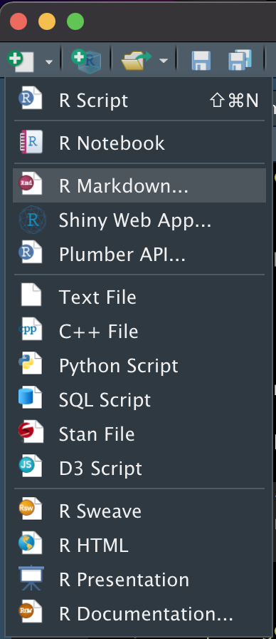
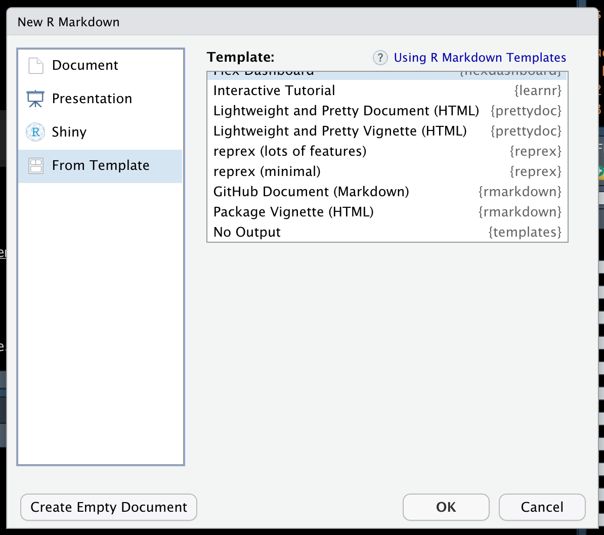

2 Creating Rmd Templates
2.1 ⭐️Overview
This file contains notes on creating Rmd templates for RStudio.
- In RStudio, click on the “new file” button.
- Click “R Markdown…”

- Click “From Template” in the left sidebar menu.
- A list of Rmd templates appears in the “Template:” list.

You can create your own templates and add them to this menu, which can be really handy! Below, I describe how to do that.
Important: Rmd templates can only be added to RStudio’s template list by adding the Rmd template to a package and then installing that package on your computer. Read Hadley Wickham and Jenny Bryan’s R Packages book for an overview of creating R packages.
2.2 🌎Useful websites
2.3 Create a package
See R Packages and/or my R packages notes.
2.4 Add a template to your package
Step 1. Create directory for template
Templates are located within the
inst/rmarkdown/templatesdirectory of a package. This structure can be generated automatically with theuse_rmarkdown_template()function from theusethispackage. It is possible to contain multiple templates in a single package, with each template stored in a separate sub-directory.
Step 2.
For example, the “No Output” Rmd template can be viewed at: https://github.com/brad-cannell/templates/blob/master/inst/rmarkdown/templates/no_output/skeleton/skeleton.Rmd
Step 3. Change the name of the folder in inst/rmarkdown/templates from template-name. For example, no_output.
Step 4. Open the folder you just renamed and update template.yaml.
The value you pass to the
name:parameter will determine how the template is listed in RStudio’s template list. For example,name: No Output.The value you pass to the
description:parameter appear as a tool tip when you hover your mouse over the template’s name in RStudio’s template list. For, example,Brad Cannell's template for an Rmd file with no output.
Step 5. Create (or copy and paste) your Rmd template file into skeleton/skeleton.Rmd.
🗒Side Note: If you already have a template in your package, you can create another one by pasting usethis::use_rmarkdown_template() in the console again and following the steps above.
## R version 4.0.5 (2021-03-31)
## Platform: x86_64-apple-darwin17.0 (64-bit)
## Running under: macOS Big Sur 10.16
##
## Matrix products: default
## BLAS: /Library/Frameworks/R.framework/Versions/4.0/Resources/lib/libRblas.dylib
## LAPACK: /Library/Frameworks/R.framework/Versions/4.0/Resources/lib/libRlapack.dylib
##
## locale:
## [1] en_US.UTF-8/en_US.UTF-8/en_US.UTF-8/C/en_US.UTF-8/en_US.UTF-8
##
## attached base packages:
## [1] stats graphics grDevices utils datasets methods base
##
## loaded via a namespace (and not attached):
## [1] compiler_4.0.5 magrittr_2.0.1 bookdown_0.18 tools_4.0.5
## [5] htmltools_0.5.0 rstudioapi_0.13 yaml_2.2.1 stringi_1.5.3
## [9] rmarkdown_2.6 knitr_1.30 stringr_1.4.0 xfun_0.19
## [13] digest_0.6.25 rlang_0.4.10 png_0.1-7 evaluate_0.14